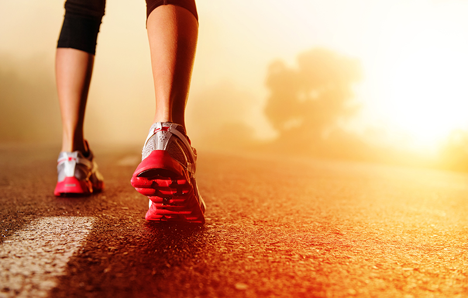

Even though vaccines are available and have been widely administered, remember that they are no guarantees that you will not catch the virus. Your first – or last, depending on how you look at it – line of defence is still your immune system and how strong it is or how well it can protect you if you get infected.
A recent study in California among 50,000 Covid-19 patients found that people who exercised 10 minutes or less per week were hospitalised at twice the rate of those who worked out 150 minutes a week. Not only that, but the first group was also 2.5 times more likely to not survive the infection.

How Exactly Does Exercise Help?
Regular exercise elevates levels of immunoglobulin IgA, an antibody that protects the lungs and other parts of the body that are susceptible to viruses and bacteria. It also increases the amount of CD4+ T cells, which act like messengers to alert the immune system when the body is under attack and also help regulate its response.
At the same time, getting regular and adequate exercise activates more immune cells. These cells “police” the body’s blood circulation, keeping a lookout for infected cells (which they will kill off) while producing antibodies to destroy antigens. Your muscles are put to work too; when you exercise, they release myokines, which are molecules that tell your immune system to be on high alert, thereby heightening its defence.
How Should I Exercise Before a Covid-19 Vaccine?
If you already have a regular exercise routine, there is no reason to change it up. Work out as you usually would. You can add on some light arm movements – shoulder press, bicep curls, wall push-ups – if you’re exercising just before taking the shot. The Covid-19 vaccine is injected into the deltoid so by exercising that muscle, you release the immune signals there, which may help draw immune cells to that area and stimulate a stronger immune response to the vaccine.
So whether it’s before or after getting your Covid-19 vaccine, the same rules apply to working out: Listen to your body and let it guide you. On its own, exercise provides numerous benefits that include relieving stress and anxiety, which could be helpful if you have concerns about getting inoculated. In any case, consult your physician before embarking on any exercise programmes. You can also tap into the expertise of Fitness First’ virtual Personal Trainer to help you make your decision.
Note: This blog offers health, fitness and nutritional information for educational purposes only. You should not rely on this information as a substitute for, nor does it replace, professional medical advice, diagnosis, or treatment. Consult a physician before starting any exercise programmes or changing your diet.